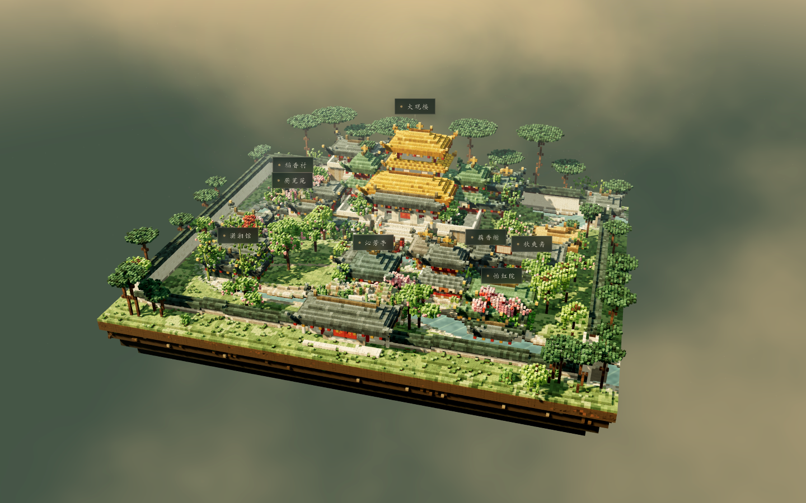

AN OPEN ATLAS OF PLACES & WORLDS
世界很大，
一起走进去。
从校园的一角，到山水与城池。
让真实的地方、曾经的历史与纸上的世界，
成为可以探索的三维空间。
地点可检索 · 场景可体验 · 来源可追溯

首个收录场景 01
THE GRAND VIEW GARDEN纸上的园子，眼前的世界。
真实场景截图 · 非实测模型
大观园 ／《红楼梦》文学重构
进入 3D →
—地点与世界档案
—国家与地区
—已验证可浏览
—外部项目
先建立世界的目录，
再逐一补全三维场景。
EXPLORE THE ATLAS
发现一个新的世界
ⓘ
地点目录持续完善。进入已收录场景，或为熟悉的地方补充三维资源。
正在打开世界图鉴…